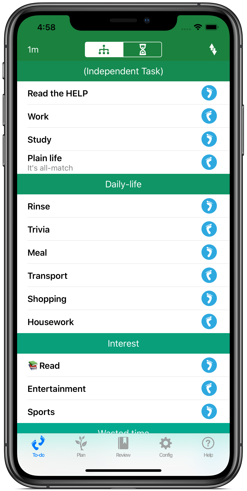
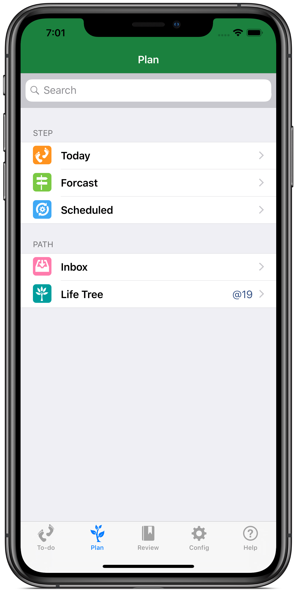

Time Golden Task Manager
TimeGolden是新一代的時間管理工具, 採用了柳比歇夫式時間追蹤模式，兼具待辦事宜、思維導圖的多項優點。
您可以把它當簡單的todolist用，只需要付出很少的代價就可以獲得至關重要的資料：珍貴的時間是如何流逝的。
您可以把它當成周密的計畫表用，把艱巨的大事分成多層次多步驟的小事，用積累打敗一切困難。
Requirements
- iPhone or iPod touch.
- iOS 6.0 or later.


Screenshots
{kind=link}
簡簡單單的Todolist
這裏放置今天的待辦事宜清單，包含兩種基本操作：時間按鈕計時、單指掃動完成任務。和傳統todolist和time track軟體不同，TimeGolden增加了時間腳步按鈕，大部分任務在執行的過程中會被多次定時點擊。這種"先做後登記的"方式比傳統time track類軟體check in/check out更靈活，同時又比較符合todolist的使用習慣。

一覽無遺的回顧
這裏是回顧功能區，所有時間腳步按鈕生成的紀錄必須通過"時間足跡－日誌"轉化為日誌。 統計、日曆、搜索可以對日誌進行詳盡的分析，無論是"上個月花了多長時間讀書？"、"話費是哪天充的？"、"去年十一長假的時間都花到哪里去了？"、"上上個星期我是怎麼過的？"等等都可以獲得滿意的答案。

{kind=link}
化難為易的計畫
這裏您可以看到今天的任務、明天的安排、計畫中的事項和包羅萬象的人生之樹。 您可以把人生之樹看成是結構化的收集箱，TimeGolden的todolist是從人生之樹自動或手動選擇而來，並且將所花費的時間回饋在樹上， 她將與您一起成長。
Features
時間追蹤
通過時間腳步的方式記錄您每天的時間花費，簡便有效。

人生之樹
按層次把人生轉化成一棵樹，枝幹的粗細對應耗時的多少，最終長成什麼樣子，靠您自己活出來。

任務安排
有期限的任務、週期性的任務、明天的任務都能安排得井井有條。

統計/搜索
時間怎麼溜走的？前天還是上個月、本周或是本年？任意時間段的時間分配情況都能一一呈現。

日誌
不喜歡統計，習慣按日曆流覽？沒問題，日曆視圖裏啥事都歷歷在目。
番茄時間
習慣了依靠番茄時鐘來集中精力？無論是定間隔式還是番茄式，TimeGolden都能按時觸發。

任務提醒
任務提醒讓您不再遺漏關鍵事宜。

密碼保護
保護私密資訊，兼顧方便性。
Release Notes
TimeGolden 1.0 Released on 5 May, 2013
- First release.
Testimonials
Here's what our customers think about us.
非常強大的時間追蹤工具，"本月花了100小時在遊戲上"這個事實對我觸動很大。by 邵立慧 企業員工
所有雜事都被安排好了，不再錯失重要客戶。by 陳越 私營企業老闆
選擇每天要做的事，然後完成它；定期回顧、評估、約束，再也沒有拖延－焦慮的迴圈，就算是一個人也可以按部就班。by 黃尚海 自由職業者
曾用過好幾個時間/任務管理app，這個才是我想要的：澆水、施肥，好好呵護人生之樹。by 羅鐵軍 大學生